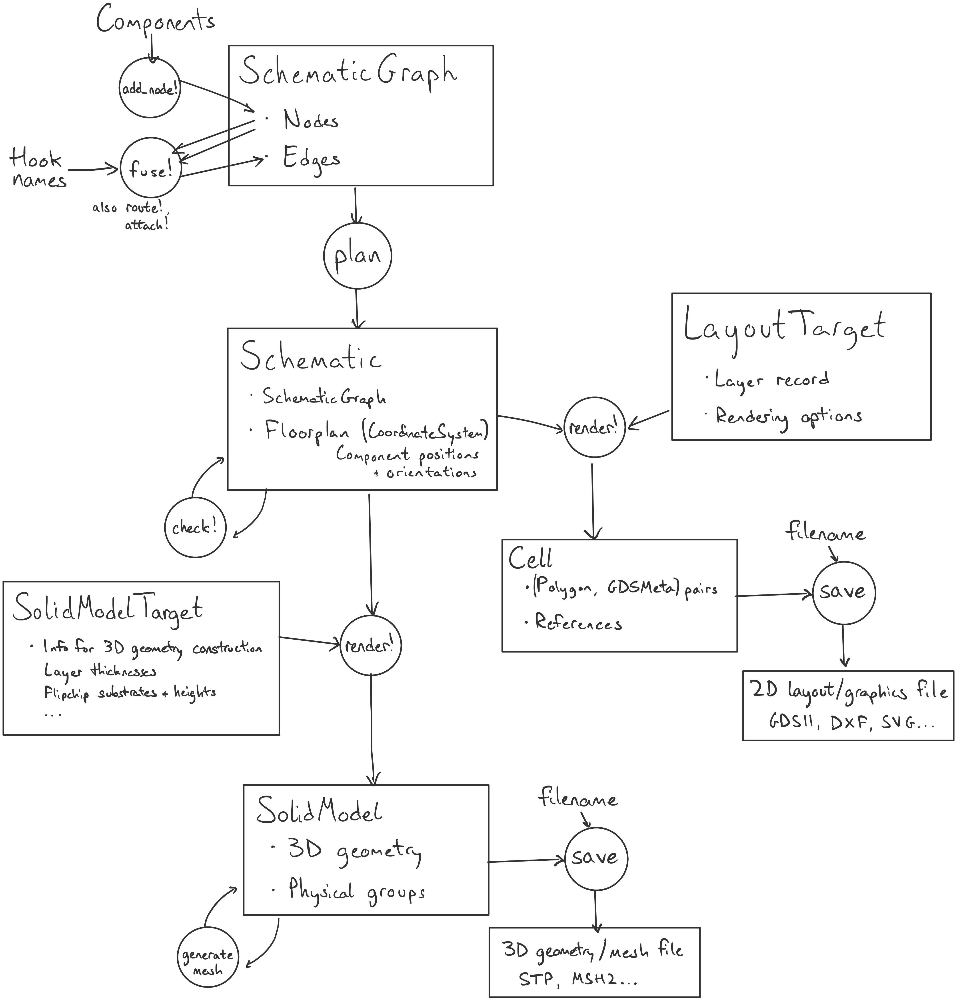

Schematic-driven design
SchematicDrivenLayout provides an interface for schematic-driven design, intended to
- Support a formal schematic-level description of a device
- Make placing and connecting components and routing wires easier and more automated
- Allow inspection/analysis/modification of a design at a higher level
- Keep layers of abstraction separate, except for deliberate abstraction-breaking "escape hatches" to allow detailed, flexible control over layouts
The schematic-driven design flow goes like this:
- Define the
Components that will appear in the device - Construct a
SchematicGraphby adding theseComponents and their connections usingadd_node!,fuse!,route!(::SchematicGraph, ...), andattach!(::SchematicGraph, ...) - Use this to create a
Schematicthat calculates where the components go (but does not yet render them) usingplan - Check that the
Schematicsatisfies critical constraints usingcheck! - Make any further changes now that components are placed but not rendered
- Render to an output format with
render!, with rendering options and layer record described by aTarget
Here's what that looks like as a diagram, for comparison with geometry-level flows:
Quick start
Defining a component
We'll define an arrow similar to SchematicDrivenLayout.ArrowAnnotation but without any text:
using DeviceLayout, .SchematicDrivenLayout
import DeviceLayout: mm, μm, nm
import DeviceLayout.SchematicDrivenLayout: AbstractComponent
import DeviceLayout.Graphics: inch
using FileIO
### Define the component type
"""
struct ArrowComponent <: AbstractComponent{typeof(1.0nm)}
name = "arrow"
length = 0.05mm
width = 0.005mm
end
An arrow with a given length and width.
The arrow is drawn in the `SemanticMeta(:annotation)` layer.
# Hooks
- `nock`: The base of the arrow, with inward direction along the arrow
- `tip`: The tip of the arrow, with inward direction opposite the arrow
"""
@compdef struct ArrowComponent <: AbstractComponent{typeof(1.0nm)}
name = "arrow"
length = 0.05mm
width = 0.005mm
end
# Draw an arrow from left to right
function SchematicDrivenLayout._geometry!(cs::CoordinateSystem, ac::ArrowComponent)
(; length, width) = parameters(ac)
rect = centered(Rectangle(length, width))
zer = zero(width)
tip_edge = [Point(zer, zer), Point(3 * width, 3 * width), Point(zer, 6 * width)]
tip = Polygon(vcat(tip_edge, reverse(tip_edge) .- Point(width, zer)))
tip = Align.flushright(tip, rect, offset=width, centered=true)
arrow = union2d(rect, tip)
return place!(cs, arrow, :annotation)
end
# Define a hook at the base of the arrow, pointing in the same direction
# Define a hook at the tip of the arrow, pointing in the opposite direction
function SchematicDrivenLayout.hooks(ac::ArrowComponent)
nockhook = PointHook(Point(-ac.length / 2, zero(ac.length)), 0°)
tip = PointHook(Point(ac.length / 2, zero(ac.length)), 180°)
return (nock=nockhook, tip=tip)
end
### Demo a component instance
arrow = ArrowComponent()
arrow_cs = geometry(arrow)
# Render to Cell for SVG export
target = ArtworkTarget(ProcessTechnology((; annotation=GDSMeta()), (;)))
arrowcell = Cell("arrow", nm)
render!(arrowcell, arrow_cs, target)
save("arrow_geom.svg", arrowcell, width=4inch, height=2inch);Defining a Schematic
Now we'll make a Schematic that attaches two arrows at the base, rotating the second so that it points in the opposite direction:
g = SchematicGraph("double_arrow")
a1_node = add_node!(g, arrow)
fuse!(g, a1_node => :nock, arrow => :nock)
sch = plan(g; log_dir=nothing)
check!(sch)
cell = Cell("double_arrow", nm)
render!(cell, sch, target)
save("double_arrow.svg", flatten(cell), width=4inch, height=1inch);